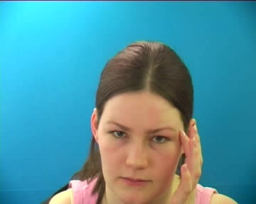
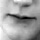
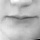

Check if pose is a good addition
RNN-evaluator = actor-critic, RNN chooses, critic says if you chose wrong
RNN - beam search
Got permission for LRW dataset
Require ~2TB of storage for TV shows, etc.
Theory of LSTMs
Read LIPREADING WITH LONG SHORT-TERM MEMORY (Michael Wand)
Coded preprocessing steps in full to extract 40x40 mouth
Frame extracted from video:
Face extracted from Frame:
Mouth extracted from Face:
Above Head pose: (0.018895, 0.0636381, 0.65107)
Aligned Face extracted from Frame:
Aligned Mouth extracted from Aligned Face:
Face Alignment?
One-to-one LSTM?
Compare with Abhishek's face images
Compare Pose estimation papers (talk to Isha)
Read Spatial Transformer Networks (Zisserman)
Run LSTM on GRIDcorpus (copying all files into Atom is time-consuming)
Run network on LRW
Nose/mouth fiducials